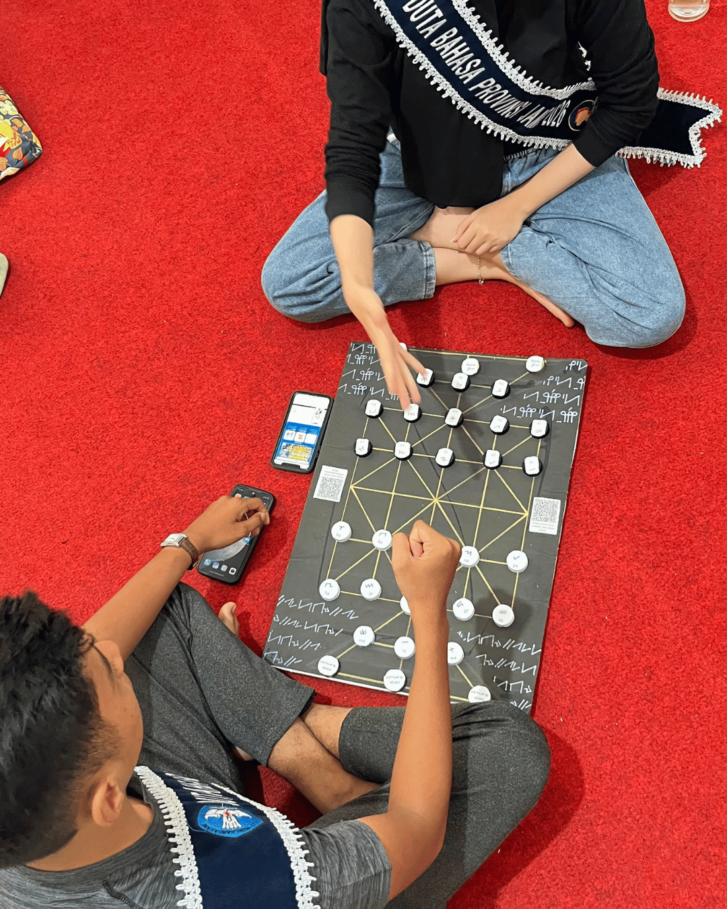
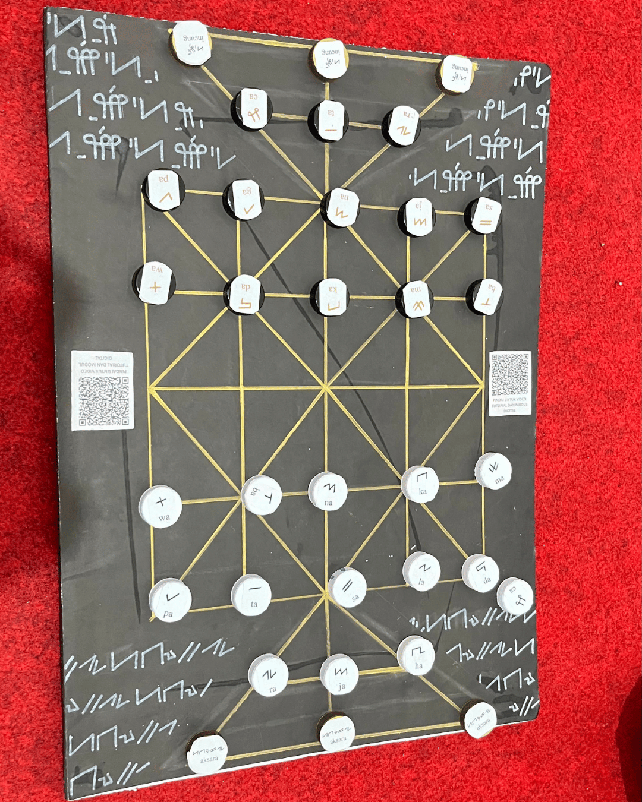
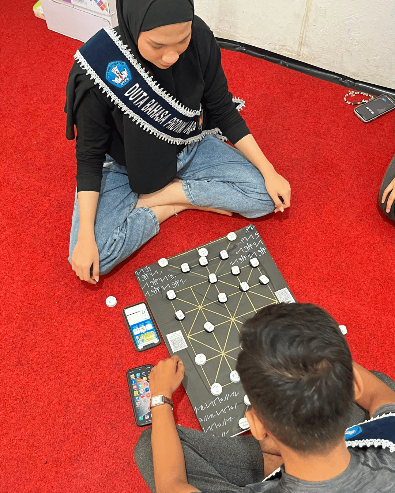
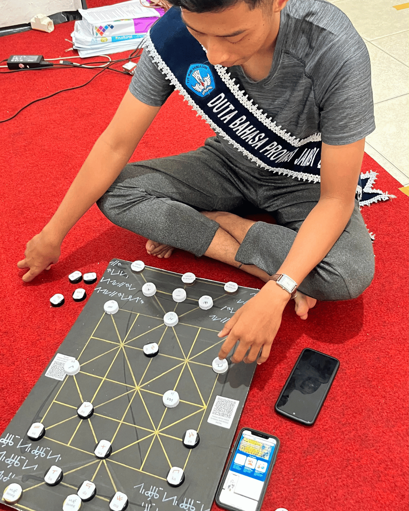
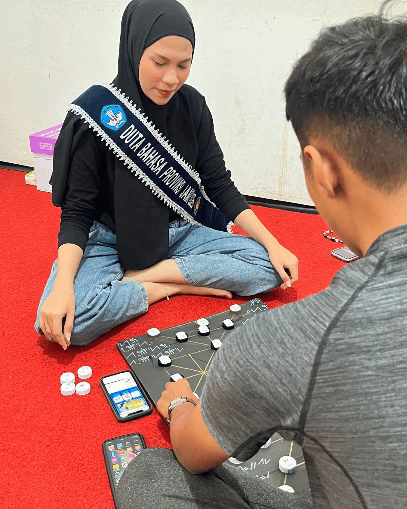

Ikuti panduan langkah demi langkah ini untuk mulai bermain, mengasah logika, dan mempelajari Aksara Incung bersama teman-temanmu.
Permainan ini dimainkan oleh 2 orang (satu sebagai tim aksara, satu sebagai tim incung). Siapkan papan dan bidak. Terdapat bidang aksara yang tertulis Aksara Incung, serta bidak khusus "raja" yang berfungsi sebagai huruf apa pun layaknya kartu Joker.

Susunlah bidak-bidak pada papan permainan sesuai dengan contoh atau ketentuan awal posisi Damdas sebelum pertempuran strategi dimulai.

Bidak hanya bisa berjalan satu langkah. Sembari melangkah, kamu wajib menyebutkan pelafalan dari aksara yang tertulis di bidak tersebut. Kamu bisa memangsa bidak lawan jika posisinya berada di depanmu dan petak di belakangnya kosong—artinya kamu melompati bidak tersebut dan memilikinya!

Jika lawan melewatkan kesempatan untuk memangsa bidak yang sebenarnya bisa dia mangsa (lupa), kamu berhak meneriakkan "DAM". Sebagai hukumannya, kamu bisa langsung memangsa 3 bidak lawan manapun sekaligus!

Jika bidak salah satu pemain telah habis, maka permainan selesai. Sebagai tantangan terakhir, susunlah sebuah kata bermakna menggunakan sisa bidak yang kamu miliki!
